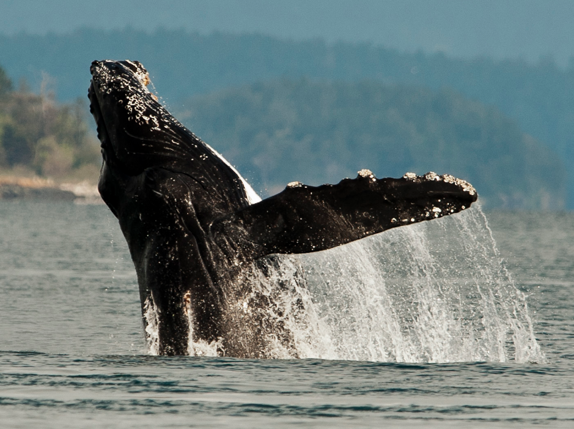
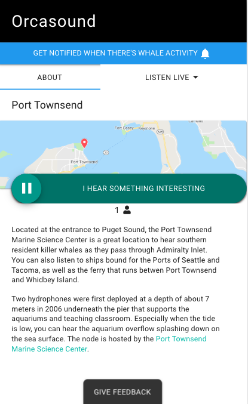

Beam Reach, SPC (founded 2017)
Accelerating marine bioacoustics & wildlife conservation
Marine Science |
Technology |
People |
|  |  |
|
Bioacoustics |
Hydrophones |
SRKW* stewards |
* SRKW = Southern Resident Killer Whales, endangered salmon-eating orcas of Puget Sound
Beam Reach: who we are
We're a small family business with decades of connections!
Dr. Scott Veirs:
|
|
Dr. Val Veirs:
|

|
Graphic of Orcasound partners across bottom?
Vessel noise can mask both calls & clicks

Frequencies of vessel noise overlap
|

Squeaky ship: |
Less vessel noise = more access to scarce salmon
Good news: many quick quieting options!
 |
 |
Operational (temporary) and technological (permanent) options (see Williams+2019)
Orcasound: a tool built for SRKW conservation

The product of 15 years of citizen scientists listening for whales, Orcasound is now a cooperative hydrophone network and an innovative open-source hardware/software project.
Orcasound funding history and future
From NOAA/WDFW contracts/grants to crowd-funding, philanthropy, and hackathons

Orcasound hardware evolution
A listening node for less than $1000 (U.S.)!
|
Basic ingredients (and costs):
60% of cost is hydrophones! (>75-95% for research nodes) |

|
Orcasound 2.0 (coming this summer)
Make “listening for whales” interactive and inform real-time end-users
For free live-listening, browse to: live.orcasound.net
 |
 |  |
Orcasound 1.0 player launched Nov., 2018. Orcasound 2.0 is in beta-testing.
Broadband received level peaks
Ships and boats have similar maxima, but ships last longer

Validating noise peaks & speed with AIS, cameras, and radar
Slow boats have lower maxima, but usually last longer than fast boats...

Images from the U.Vic./NEMES automated camera at Orcasound Lab. Smooth curve (black) is 1200-second running average broadband dB level. Now also tracking boat type & speed with M2 AIS/radar/camera system./p>
Monitoring ship noise in SRKW habitat
Urban ambient noise level: a baseline for "delta" noise metrics
Maximum received noise level vs duration
 From ASA 2019 talk by V.Veirs with ref. to Holt et al., 2017, "Noise levels received by endangered killer whales..." From ASA 2019 talk by V.Veirs with ref. to Holt et al., 2017, "Noise levels received by endangered killer whales..."
|
Monitoring aircraft noise in Seattle |
Orcasound: as a partner in tracking SRKWs
Together we can detect & protect SRKW (with cool tech, like... Localization)
|
|
Mother-calf conversation! |
 |
|
| SRKWs "speak up" in noise from nearby boats (Holt, Noren, Veirs, Emmons & Veirs, 2009) |
2008: ASA talk by V.Veirs |
Orcasound for tracking SRKWs
Cool tech: machine learning

Emerging orca AI (in real-time?):
- Orcasound's archive of train/test data
- Orcasound collaboration with UW and Microsoft with Dr. David Bain
- Ocean Networks Canada workshops in November
- Meridian's Keta (open-source)
- ORCA-SPOT (trained on Orca Lab NRKW calls)
- DFO+Google?
Admiralty Inlet study (unpublished) -- Of 22 SRKW transits during local daytime:
humans detect 45%; machine 64%; together 77%.
|
|
Emerging orca AI (in real-time?):
|
Admiralty Inlet study (unpublished) -- Of 22 SRKW transits during local daytime:
humans detect 45%; machine 64%; together 77%.
/